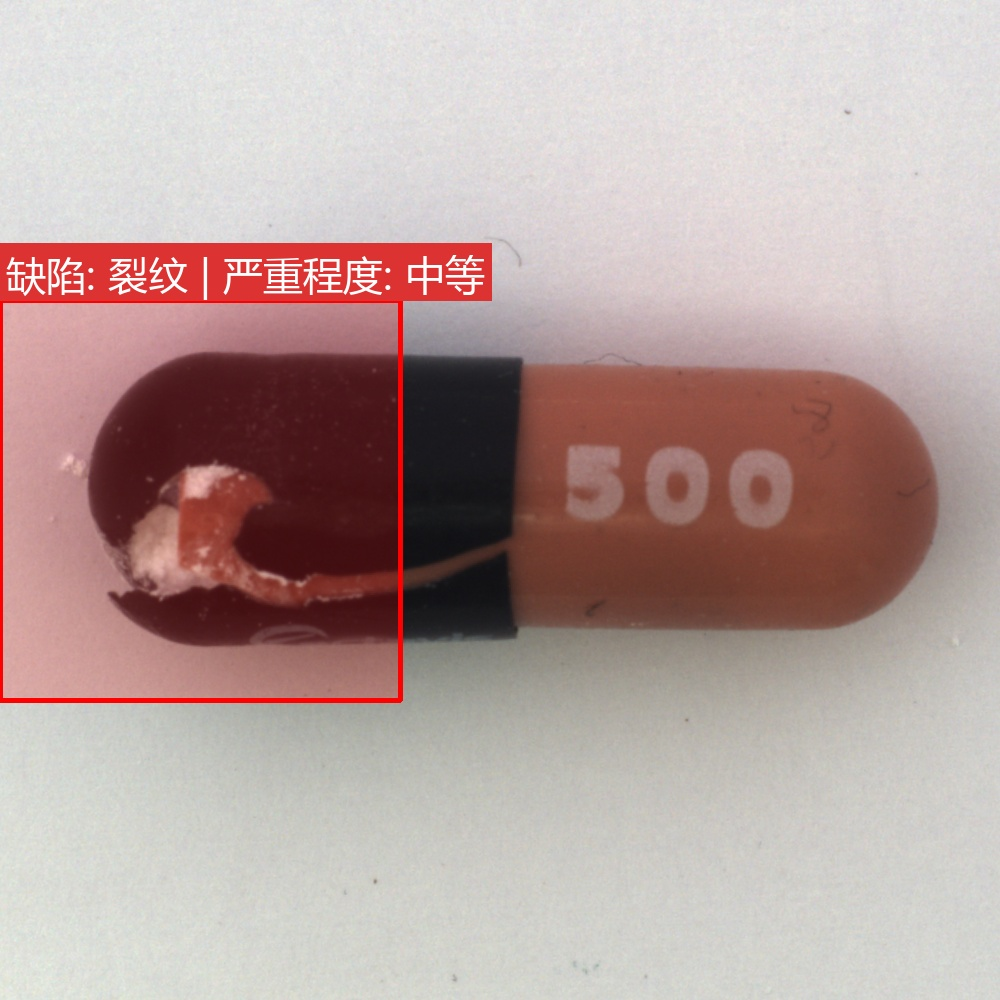
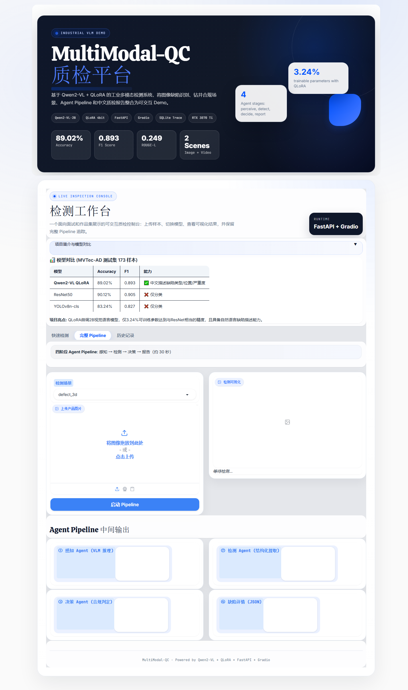

01
Perceive
读取图像或视频帧，整理视觉上下文和检测对象。
面向作品集展示的工业多模态质检系统：图像/视频输入经过 Qwen2-VL 微调模型和可解释 Agent Pipeline，输出缺陷判断、结构化记录与中文质检报告。
不是只给一个分类标签，而是把工业质检拆成可读、可复盘的四个阶段，方便演示模型判断依据和业务落地路径。
读取图像或视频帧，整理视觉上下文和检测对象。
基于 Qwen2-VL + QLoRA 输出缺陷类型、位置与置信信息。
结合阈值、场景规则和历史记录形成质检结论。
生成中文说明、处置建议和可导出的结构化记录。
FastAPI 提供后端接口，Gradio 承担可交互演示台，适合面试、课程展示和项目作品集快速讲清模型能力。

检测结果会转成直观的视觉结果，和模型给出的文本报告一起展示。

内置历史记录、指标看板和 CSV 导出，让一次检测从输入到结论都能被追踪。
MVTec-AD 测试集 n=173，公开仓库保留训练、评测、基线和部署脚本，大文件通过 Release 分发。
Precision for Qwen2-VL + QLoRA inspection.
F1 score with generated Chinese descriptions.
Scenarios: MVTec defect inspection and drilling compliance entry.
Model paths: VLM, ResNet50, YOLOv8n-cls baselines.